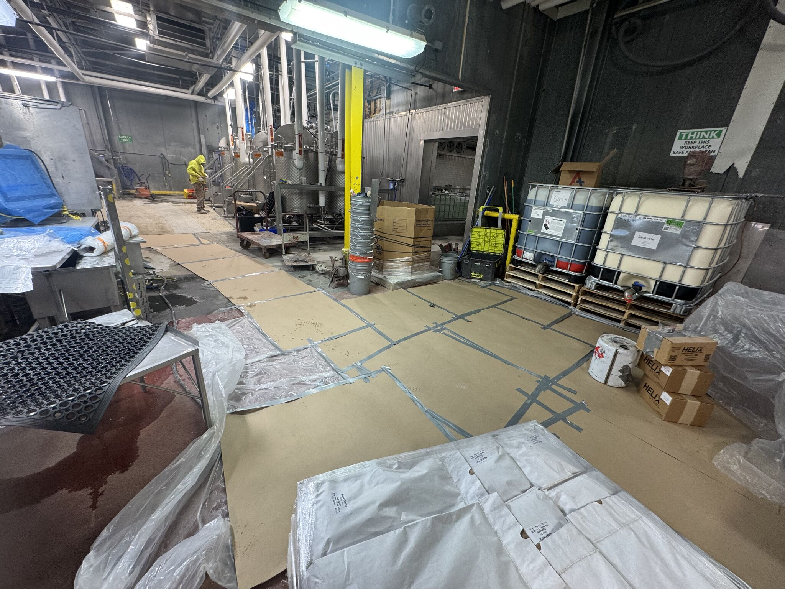
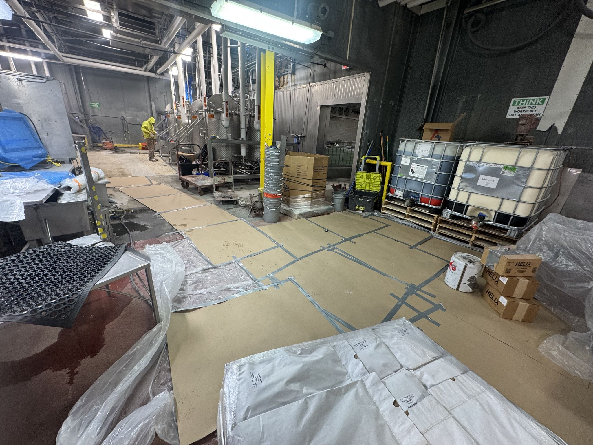
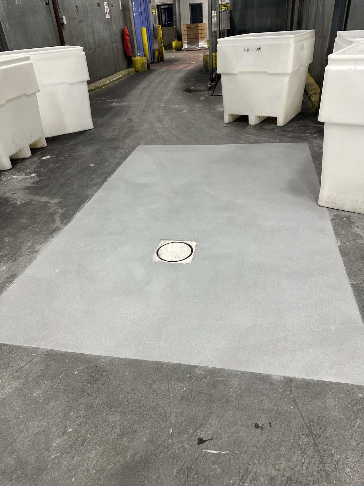
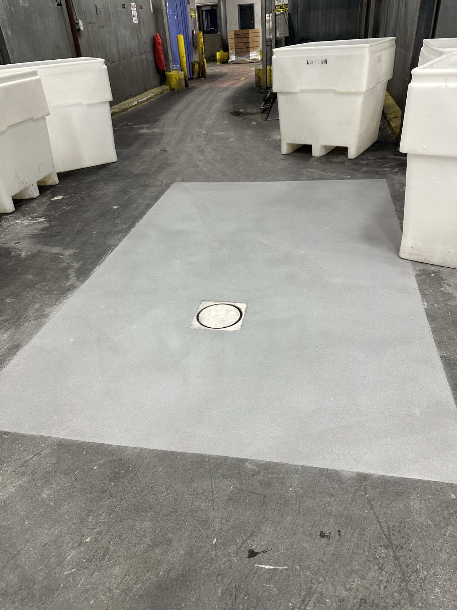

When a poultry processing facility needed 3,000 square feet of failed flooring replaced, they couldn't afford to shut down for a week. Production runs don't pause, and every day offline costs real money. So we did what we do best — got it done over a single weekend.
Before: Failing Floor, Active Production
 

The existing floor was worn out — delaminated, cracked, and no longer meeting the sanitary standards a poultry operation demands. The facility needed a complete replacement, not a patch job.
Saturday: Demo Day
Our crew hit the ground Saturday morning. Jackhammers broke up the old delaminated flooring. Scarifiers and grinders profiled the concrete substrate down to a clean, bondable surface. By the end of Saturday, 3,000 square feet of old floor was gone and the substrate was prepped and ready.
Sunday: SaniCrete STX Installation
Sunday morning, our crew started pouring SaniCrete STX — 3/8" stainless steel reinforced cementitious urethane. The team worked methodically across the full 3,000 SF, troweling each section to a seamless, slip-resistant finish. STX's rapid cure time meant the floor would be ready for production by Monday morning.
Monday: Back in Production
 

By Monday morning, the facility was back up and running on a brand new, USDA-compliant floor. 3,000 square feet of seamless, chemical-resistant, slip-resistant SaniCrete STX — installed in a single weekend with zero production days lost.
That's how shutdown weekends work. Processors don't get many windows, so when they do, execution matters.
Products Used
- SaniCrete STX — 3/8" stainless steel reinforced cementitious urethane